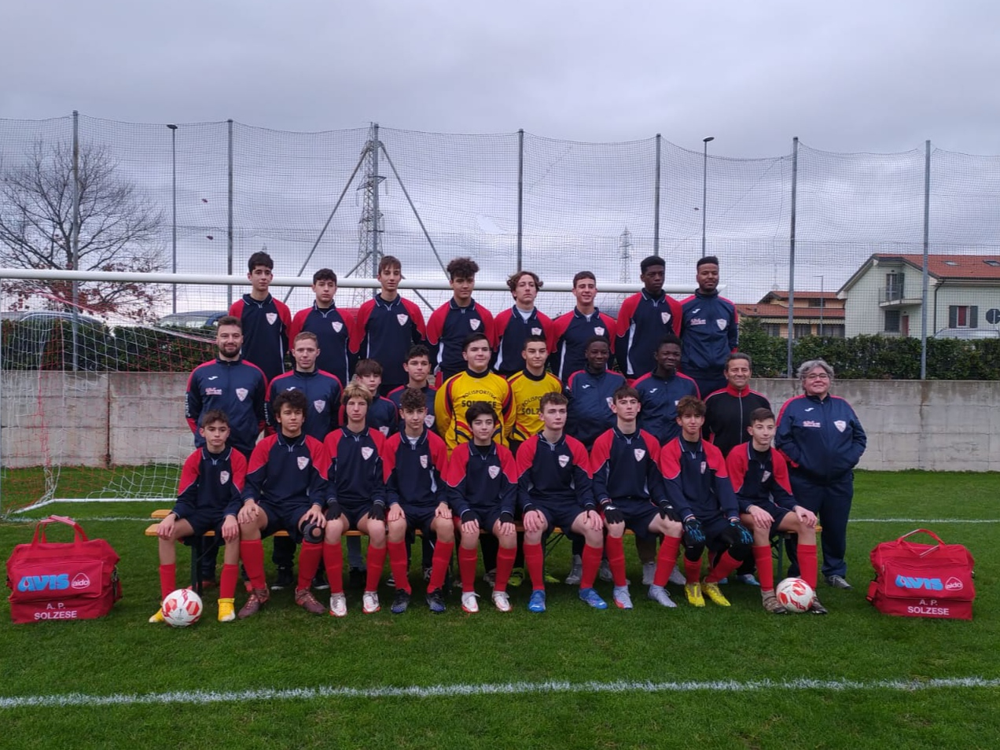
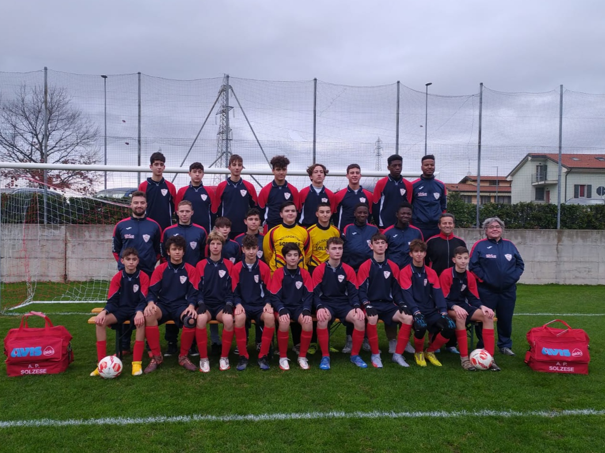

Io e lo Sport
Una mia grande passione e' fare sport. Fin da bambino mi e' sempre piaciuto fare attivita' fisica come se quella mi aiutasse
a liberarmi da tutti i miei problemi. Il primo sport che ho praticato e' stato pattinaggio a rotelle. Non ero uno dei piu' forti ho vinto
una sola volta una gara ed e' uno dei giorni piu' belli della mia infanzia e me lo ricordo ancora. Penso che oggi abbia fatto bene a praticare
questo sport perche' mi ha aiutato molto nella resistenza e anche molto nell'equilibrio. Certo ripensando a tutte le volte che sono
tornato a casa con delle ginocchia sbucciate, croste, e altre ferite o "medaglie" come le chiamavo io mi viene da pensare che strano sport
che ho scelto pero' dopo ripensandoci bene devo dire che la sensazione di avere il vento che passa tra il casco e' una cosa bellissima.
A inizio seconda media ho cambiato sport e sono passato al calcio. Sono sport molto diversi in molti aspetti pero' a me sono piaciuti entrambi
nello stesso modo. Il mio ruolo principale e' l'ala destra, tuttavia a volte mi mettono anche in centrocampo o in fascia sinistra. Tuttora il mio
sport e' il calcio ancora nella stessa squadra dove ho iniziato, devo dire che da quando ci sono io sono cambiate molte cose anche perche' ora le
partite le vinciamo mentre prima se pareggiavamo era una grande cosa.
Nella mia vita ho praticato anche il nuoto pero' non a livello agonistico
come invece lo e' stato per gli sport prima elencati. Ho iniziato a fare nuoto da quando avevo 4 anni pero' ho dovuto smettere perche' lo facevo
il sabato mattina mentre ora in quell'orario li sono a scuola. Una delle cose che mi ha sempre affascinato del nuoto e' stato che se sopra l'acqua
c'e' casino se ci immergiamo non sentiamo niente a parte i nostri pensieri. Penso che continuero' con lo sport finche' ne avro' la possibilita'
perche' mi ha sempre aiutato a rilassarmi.
 
